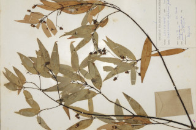
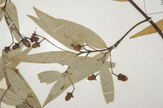
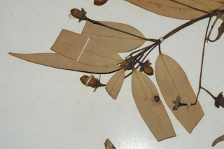

Images :




| Habit : | Trees up to 12 m tall. |
| Leaves : | Leaves simple , opposite or subopposite , petiole 0.5-0.8 cm, planoconvex in cross section, glabrous ; lamina 3.5-10 x 1.2-2 cm, linear-lanceolate , apex narrowly acute to acuminate , base acute , chartaceous , sparsely minutely tomentose beneath when young; trinerved , suprabasal , lateral nerves not reaching leaf apex ; tertiary_nerves horizontally_percurrent , faintly visible, higher order nerves closely reticulate . |
| Inflorescence / Flower : | Inflorescence few flowered axillary panicles , slender. |
| Fruit and Seed : | Berry , ellipsoid , 1 cm long; fruiting_calyx cup shallow, lobes persistent , ovate , 0.4 cm long; seed 1. |